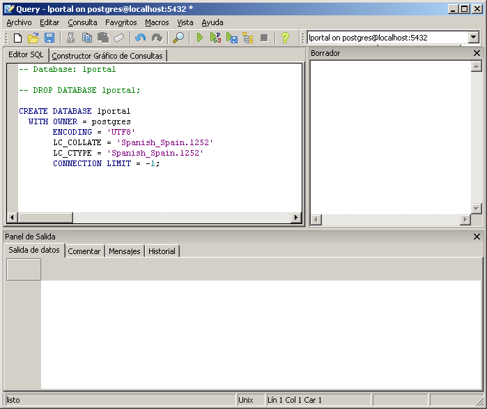
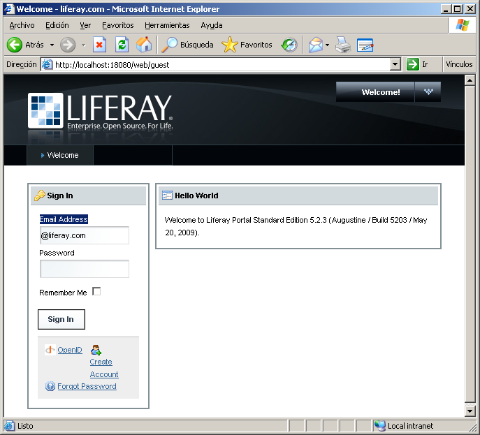
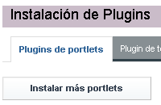
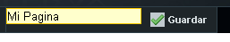

OX 3.1.4 sobre Liferay 5.2.X en Glassfish 2.1 con Postgresql 8.4.
Es posible hacer correr sin problemas una aplicación OX V 3.1.4 instalando Liferay 5.2.3 sobre un servidor Glassfish V 2.1 ya existente y con el motor de base de datos Postgresql V 8.4.Estos pasos pueden aplicar a cualquier versión de Liferay 5.x sobre Glassfish 2.x.
La guía de administración de Liferay se usó como base para los pasos aquí descritos.
También se usó el excelente artículo escrito por Scott Fehrman, Liferay 5.0 on existing Glassfish v2.
Mis agradecimientos y reconocimientos a Oscar Caro por su valioso aporte y ayuda para armar esta solución.
Acá se introduce la variante de crear un dominio propio denominado lportal para desplegar Liferay, aunque se puede trabajar perfectamente sobre el dominio por omisión de Glassfish (domain1).
Pre-requisitos
- JDK 5 o superior instalada.
- Glassfish 2.1 instalado.
- Postgresql 8.4 instalado.
- Driver jdbc postgresql-8.4-701.jdbc4.jar.
Descargas de software
- liferay-portal-5.2.3.war
- liferay-portal-dependencies-5.2.3.zip
- liferay-portal-sql-5.2.3.zip
Estos archivos están disponibles en la página oficial de descargas de Liferay (www.liferay.com)
Descomprima el archivo liferay-portal-dependencies-5.2.3.zip en un directorio seleccionado.
Descomprima el archivo liferay-portal-sql-5.2.3.zip en un directorio seleccionado.
Configuración de base de datos Postgresql
Ir al PGAdmin III e iniciar sesión en su servidor porgresql de preferencia.Crear una nueva base de datos denominada lportal con soporte UTF8

Seleccione la base de datos lportal y haga click en el icono de comandos sql

Esto nos lleva a la consola de comandos:

Seleccione la opción de abrir archivos, bien por el menú Archivo opción Abrir... o por el botón de la barra de tareas:
Esto nos lleva a la caja de dialogo para abrir archivos de script de sql:

Ubique el directorio donde descomprimió el archivo liferay-portal-sql-5.2.3.zip, y seleccione el archivo create-minimal-postgresql.sql de la ruta:
<TU-DirectorioSQL>\liferay-portal-sql-5.2.3\create-minimal\create-minimal-postgresql.sql
Pulse abrir.
Se cargara el archivo en la consola de sql:

Borre las tres primeras líneas del archivo cargado ya que estas corresponden a borrar y crear la base de datos lportal, la cual esta en blanco en nuestro caso:
Borrar:
drop database lportal;
create database lportal encoding = 'UNICODE';
\c lportal;
Pulse el botón
 para ejecutar el script.
para ejecutar el script.Al terminar la ejecución cierre la ventana del asistente de comandos sql.
Pulse refrescar sobre su base de datos lportal y en la sección tablas deben aparecer 139 tablas recién creadas.
Cierre el PGAdmin III.
Crear un nuevo dominio en Glassfish
Vamos a crear un dominio denominado lportal, con la clave de administrador lportallportal (Ud puede usar el nombre de portal y clave de administrador que mejor se ajuste a sus preferencias).Abrir una consola de comandos del sistema.
Ir al directorio de instalación de GlassFish y al subdirectorio bin.
en el directorio bin de la instalación de Glassfish escribir y ejecutar el siguiente comando:
asadmin create-domain --adminport 14848 -instanceport 18080 lportal
Donde:
- --adminport es el puerto por donde Glassfish escuchara las peticiones de la consola de administración
- --instanceport es el puerto por donde se atenderán las solicitudes de clientes http.
- lportal es el nombre del dominio que queremos crear.
Seguidamente el comando nos solicita el nombre del usuario administrador:
Please enter de admin user name> lportal
Indicamos el nombre lportal y pulsamos enter.
Luego nos solicitan el password o clave del usuario administrador:
Please enter de admin password> lportallportal
Indicamos la clave lportallportal y pulsamos enter.
Luego nos solicitan confirmar el password o clave del usuario administrador:
Please enter de admin password again> lportallportal
Indicamos nuevamente la clave lportallportal y pulsamos enter.
Paso siguiente nos solicita el master password del servicio y su confirmación, pulsamos enter en ambos casos para aceptar el valor por omisión.
>Please enter the master password [Enter to accept the default]:
> Please enter the master password again [Enter to accept the default]:
Acá se muestra un ejemplo de la salida de la consola:
> Using port 14848 for Admin.
>Using port 18080 for HTTP Instance.
>Default port 7676 for JMS is in use. Using 50684
> Default port 3700 for IIOP is in use. Using 50685
> Default port 8181 for HTTP_SSL is in use. Using 50686
> Default port 3820 for IIOP_SSL is in use. Using 50687
> Default port 3920 for IIOP_MUTUALAUTH is in use. Using 50688
> Default port 8686 for JMX_ADMIN is in use. Using 50689
> Domain being created with profile:developer, as specified by variable AS_ADMIN_PROFILE in configuration file.
>Security Store uses: JKS
>Domain lportal created.
Esto nos crea el dominio solicitado con algunas librerías y archivos .war pre cargados por defecto. Estos últimos deben ser eliminados puesto que no los necesitamos e incluso pueden hacer que nuestra aplicación OX no funcione adecuadamente a la larga. En especial el archivo amserver.war puede ser fuente de conflictos. Por lo que procedemos a eliminar estos archivos.
Detener Glassfish si se encuentra ejecutandose
> {GLASSFISH-DIR}\bin\asadmin stop-domain lportal
Borrar Archivos
Ir a directorio de dominios en Glassfish (domains) y buscar el dominio creado por nosotros (lportal), una vez alli vamos al directorio denominado autodeploy. Una vez alli procedemos a borrar todos los .war existentes en el directorio. Acá se muestra un ejemplo de los posibles archivos a borrar:- amserver.war
- portletdriver.war
- producer.war
- WelcomePortlet.war
- wsrp-consumer-portlet.war
- wsrp-producer-portlet.war
Copiar Librerías requeridas
Ahora vamos a copiar algunos archivos requeridos por Liferay:Seleccionar los archivos descomprimidos de liferay-portal-dependencies-5.2.3.zip y copiarlos al directorio lib dentro del dominio lportal.
> {GLASSFISH-DIR}\domains\lportal\lib
Esta es una muestra de los archivos a copiar:
- annotations.jar
- container.jar
- hsql.jar
- portal-kernel.jar
- portal-service.jar
- portlet.jar
- portlet-container.jar
- saw-api.jar
Adicionalmente se requiere copiar a ese directorio los archivos siguientes:
- jtds.jar
- xercesImpl.jar
- postgresql-8.4-701.jdbc4.jar
- log4j.jar
Note que ya incluimos el driver jdbc de postgresql. Usamos la versión jdbc4 porque con la versión jdbc3 se presenta un error al momento de efectuar la conexión.
En versiones de Liferay anteriores a la 5.2 se puede requerir copiar además los siguientes archivos:
- xalan.jar
- serializer.jar
Iniciar GlassFish
> {GLASSFISH-DIR}\bin\asadmin start-domain lportal
Iniciar sesión de Administrador
Ir a la pagina:
http://localhost:14848
para abrir una sesión en la consola de administrador para el dominio lportal.
Note el uso del puerto 14848 según nuestra configuración.
Esto nos lleva a la ventana de login de la consola donde debemos indicar nuestras credenciales de administrador para el dominio en cuestión, con nombre de usuario: lportal y contraseña: lportallportal.

Recursos JDBC y Pool de Conexiones
Ahora procedemos a crear los recursos y pool de conexiones de Liferay.Pool de Conexión
En la ventana de consola de administración de Glassfish, en la sección de Tareas Comunes seleccionamos: Crear nuevo conjunto de conexión JDBC.En la ventana de configuración que se abre colocar los valores siguientes:
Nombre : LiferayPool (Nombre del conjunto de conexión)
Tipo de Recurso: javax.sql.ConnectionPoolDataSource (Tipo del recurso de conexión, también se puede usar : javax.sql.DataSource)
Proveedor de la base de datos: PostgreSQL (Nuestro proveedor de servicios de base de datos)
Pulsamos el botón siguiente.
En la ventana de dialogo, en la sección de Propiedades adicionales colocamos:
Nombre Valor
DatabaseName lportal
Password <Nuestro Password de Postgresql>
PortNumber 5432 ( o nuestro valor de Puerto del Server de Postgresql)
ServerName localhost (o nuestra Ruta de Servidor de Postgresql)
User <Nuestro Usuario de Postgresql>
Hacemos click en finalizar. Podemos probar nuestra conexión seleccionando la que acabamos de crear de la lista de conexiones disponibles y pulsando la opción sondeo. Al hacer esto nos debería indicar que se realizo la conexión satisfactoriamente.
Por la consola de comandos podemos efectuar esta tarea mediante la orden:
{GLASSFISH-DIR}/bin/asadmin create-jdbc-connection-pool \
--datasourceclassname org.postgresql.ds.PGConnectionPoolDataSource \
--host localhost \
--port 14848 \
--user lportal \
--restype javax.sql.ConnectionPoolDataSource \
--description "Lferay pool" \
--property ServerName=localhost:Password=postgres:DatabaseName=lportal:User=postgres:PortNumber=5432 \
LiferayPool
Pulsamos enter:
>Please enter the admin password> lportallportal
>Command create-jdbc-connection-pool executed successfully.
Recursos JNDI JDBC
Seguidamente en la sección de Recursos, seleccionamos Recursos JDBC.En la tabla de recursos disponibles pulsamos la opción nuevo, e indicamos lo siguiente:
Nombre JNDI jdbc/LiferayPool (Nombre de jndi usado por liferay como recurso de datos)
Nombre de Conjunto LiferayPool (Seleccionamos el conjunto de conexión creado en el paso anterior)
Descripción Indicamos una descripción (opcional)
Estado Activado.
Pulsamos en Aceptar. Ya tenemos nuestros recursos de conexión configurados.
Por la consola podemos hacerlo con el comando:
{GLASSFISH-DIR}/bin/asadmin create-jdbc-resource \
--connectionpoolid PostgreSQL_Liferay \
--host localhost \ --port 14848 \
--user lportal \
--enabled=true \
--description "Liferay Portal 5.2.3 Pool" \
jdbc/LiferayPool
Pulsamos enter:
>Please enter the admin password lportallportal
>Command create-jdbc-resource executed successfully.
Recursos JavaMail
Ahora configuramos una sesión para nuestro servicio de correo.En la consola grafica del Administrador, en la sección Recursos seleccionamos: Sesiones JavaMail.
En la tabla de lista de sesiones disponibles pulsamos el botón nuevo.
En la ventana de configuración que se abre ingresamos los siguientes valores:
Nombre JNDI mail/MailSession
Host de Correo localhost
Usuario Predeterminado root@localhost
Dirección de remite predeterminada root@localhost
Descripción Liferay mail
Estado Activa
Pulsamos Aceptar. Ya tenemos la sesión de correo configurada.
Estos valores debes adecuarlos a tu propia configuración en tu entorno real de correo. Estos valores son solo de muestra.
Acá se presenta como hacer esto por la consola de comandos:
{GLASSFISH-DIR}/bin/asadmin create-javamail-resource \
--mailhost localhost \
--mailuser root@localhost \
--fromaddress root@localhost \
--host localhost \
--port 14848 \
--user lportal \
--enabled=true \
--description "Liferay Portal Mail" \
mail/MailSession
Pulsamos enter:
>Please enter the admin password lportallportal
>Command create-javamail-resource executed successfully.
Desplegar Liferay
Detener Glassfish si se encuentra ejecutandose
> {GLASSFISH-DIR}\bin\asadmin stop-domain lportal
Copiar el archivo liferay-portal-5.2.3.war al directorio autodeploy del dominio lportal de Glassfish.
Esto hará que se despliegue la aplicación al iniciar Glassfish nuevamente. Lo importante es que la ruta de contexto del archivo de despliegue quede igual a /, para que de esta forma el portal sea nuestra aplicación de inicio al navegar a la ruta : http://localhost:18080.
Iniciar y detener GlassFish
> {GLASSFISH-DIR}\bin\asadmin start-domain lportal
> {GLASSFISH-DIR}\bin\asadmin stop-domain lportal
Al finalizar esta tarea debemos tener el archivo liferay-portal-5.2.3 desplegado en el modulo {GLASSFISH-DIR}\domains\lportal\applications\j2ee-modules\liferay-portal-5.2.3.
Se puede desplegar el archivo por la consola mediante el comando:
{GLASSFISH-DIR}/bin/asadmin deploy \
--host localhost \
--port 14848 \
--user lportal \
--contextroot / \
--precompilejsp=false \
--verify=false \
--name "Liferay-Portal-5.2.3" \
--enabled=true \
${LIFERAY}/liferay-portal-5.2.3.war
Configurar Liferay para trabajar con Postgresql
Detener Glassfish si se encuentra ejecutándose
> {GLASSFISH-DIR}\bin\asadmin stop-domain lportalIr a la ruta de clases del archivo desplegado, en el path:
{GLASSFISH-DIR}\domains\lportal\applications\j2ee-modules\liferay-portal-5.2.3\WEB-INF\classes
Dentro de este directorio creamos el archivo:
portal-ext.properties
Con el siguiente contenido (portal-ext.properties):
jdbc.default.jndi.name=jdbc/LiferayPool
#jdbc.default.driverClassName=org.postgresql.Driver
#jdbc.default.url=jdbc:postgresql:localhost:5432/lportal
#jdbc.default.username=postgres
#jdbc.default.password=postgres
Nota: Los valores precedidos por el símbolo # constituyen comentarios. No son necesarios en esta configuración, pero se presentan como muestra de los valores que es posible configurar en este archivo.
Ya nuestro servidor se encuentra listo para usar Liferay.
Iniciar GlassFish
- {GLASSFISH-DIR}\bin\asadmin start-domain lportal
Ir a la página de inicio del portal:
http://localhost:18080
Nos debe re direccionar a la URL:
http://localhost:18080/web/guest
Y presentar la pantalla de inicio de sesión del portal.
Donde ingresamos los valores por omisión para administrador de Liferay:
Email Address test@liferay.com
Password test

Y listo. Tenemos Liferay corriendo en Glassfish con la base de datos en postgresql.
Desplegar una aplicación OX
Para desplegar nuestros portlets de OX en Liferay sobre Glassfish los pasos son los siguientes:Configurar persistence.xml
Primero debemos configurar nuestro archivo persistence.xml para indicarle que trabaje con hibernate como provider. Esto es necesario puesto que Glassfish usa Toplink como implementación de persistencia JPA por omisión.Este archivo se encuentra en la carpeta persistence de nuestro proyecto OX en el directorio META-INF.
Aca se muestra como debe lucir el archivo persistence.xml:
<?xml version=//"1.0"// encoding=//"UTF-8"//?> <persistence xmlns=//"http://java.sun.com/xml/ns/persistence"// xmlns:xsi=//"http://www.w3.org/2001/XMLSchema-instance"// xsi:schemaLocation=//"http://java.sun.com/xml/ns/persistence http://java.sun.com/xml/ns/persistence/persistence_1_0.xsd"// version=//"1.0"//> <!-- GlassFish + Postgresql --> <persistence-unit name="default"> <provider>org.hibernate.ejb.HibernatePersistence</provider> <non-jta-data-source>jdbc/miOXApplicationDS</non-jta-data-source> <class>org.openxava.session.GalleryImage</class> <properties> <property name="hibernate.dialect" value="org.hibernate.dialect.PostgreSQLDialect"/> </properties> </persistence-unit> <!-- JUnit --> <persistence-unit name="junit"> <properties> <property name="hibernate.connection.driver_class" value="org.postgresql.Driver"/> <property name="hibernate.dialect" value="org.hibernate.dialect.PostgreSQLDialect"/> <property name="hibernate.connection.url" value="jdbc:postgresql://localhost:5432/controlestudiodb"/> <property name="hibernate.connection.username" value="postgres"/> <property name="hibernate.connection.password" value="postgres"/> </properties> </persistence-unit> </persistence>
Donde los aspectos relevantes son:
Unidad de persistencia:
<persistence-unit name="default">
Indicando el nombre de la unidad de persistencia por omisión. En este caso default.
Provider:
<provider>org.hibernate.ejb.HibernatePersistence</provider>
Indicando que se usa hibernate como provider.
JNDI:
<non-jta-data-source>jdbc/miOXApplicationDS</non-jta-data-source>
Indicando que el recurso JNDI del servidor Glassfish para obtener acceso a nuestra base de datos tiene el nombre: jdbc/miOXApplicationDS.
Siendo miOXApplicationDS el nombre de nuestra aplicacion OX seguido del sufijo DS.
Dialecto de Hibernate:
<property name="hibernate.dialect" value="org.hibernate.dialect.PostgreSQLDialect"/>
Indicando el dialecto que debe usar hibernate. Es necesario en caso de que se use el estereotipo de galería de imágenes.
Generar Portlets
Para generar los porlets se siguen los pasos acostumbrados.
Se corre el archivo build.xml de nuestra aplicación OX como una tarea ant..., Seleccionamos la opción generarPorlets y pulsamos run. Para mas detalles sobre las tareas disponibles y como realizarlas ver la documentación de OX al respecto.
Una vez culminada esta tarea debemos tener en el directorio workspace.dist de nuestra distribución de OX un archivo .war con el nombre de nuestra aplicación.
miOXApplication.war
Este es el archivo que a la larga desplegaremos en nuestro servidor Glassfish.
Recursos JNDI y Conexión de aplicación:
Iniciar GlassFish:
- {GLASSFISH-DIR}\bin\asadmin start-domain lportal
Iniciar sesión de Administrador
Ir a la pagina:
http://localhost:14848
Indicar nuestras credenciales de administrador para el dominio en cuestión, con nombre de usuario: lportal y contraseña: lportallportal.
Recursos JDBC y Pool de Conexiones
Ahora procedemos a crear los recursos y pool de conexiones de Nuestra aplicación OX.
Pool de Conexión
En la sección de Tareas Comunes seleccionamos: Crear nuevo conjunto de conexión JDBC.
En la ventana de configuración que se abre colocar los valores siguientes:
Nombre : MyOXPool (Nombre del conjunto de conexión)
Tipo de Recurso: javax.sql.ConnectionPoolDataSource (Tipo del recurso de conexión, también se puede usar : javax.sql.DataSource)
Proveedor de la base de datos: PostgreSQL (Nuestro proveedor de servicios de base de datos)
Pulsamos el botón siguiente.
En la ventana de dialogo, en la sección de Propiedades adicionales colocamos:
Nombre Valor
DatabaseName miOXDB
Password <Nuestro Password de Postgresql>
PortNumber 5432 ( o nuestro valor de Puerto del Server de Postgresql)
ServerName localhost (o nuestra Ruta de Servidor de Postgresql)
User <Nuestro Usuario de Postgresql>
Hacemos click en finalizar. Podemos probar nuestra conexión seleccionando la que acabamos de crear de la lista de conexiones disponibles y pulsando la opción sondeo. Al hacer esto nos debería indicar que se realizo la conexión satisfactoriamente.
Recursos JNDI JDBC
Seguidamente en la sección de Recursos, seleccionamos Recursos JDBC.
En la tabla de recursos disponibles pulsamos la opción nuevo, e indicamos lo siguiente:
Nombre JNDI jdbc/miOXApplicationDS (Nombre de jndi que colocamos en el persistence-unit de ox)
Nombre de Conjunto MyOXPool (Seleccionamos el conjunto de conexión creado en el paso anterior)
Descripción Indicamos una descripción (opcional)
Estado Activado.
Pulsamos en Aceptar. Ya tenemos nuestros recursos de conexión configurados.
Cerramos sesión de administrador.
Instalar Portlets OX en Liferay
Ir a la página de inicio del portal:
http://localhost:18080
Ingresamos los valores por omisión para administrador de Liferay en el inicio de sesión:
Email Address test@liferay.com
Password test
En el menú de usuario (usualmente arriba a la derecha) seleccionar Panel de Control.
Esto abre el portlet de configuración de Liferay. En la sección Servidor seleccionar la opción Instalación de Plugins.

En el tab Plugins de portlets seleccionar el botón : Instalar mas portlets.

En la ventana de dialogo seleccionar el tab Subir archivo.
Pulsar examinar...
Esto abre la ventana de dialogo para seleccionar el archivo .war que se desea instalar.

Buscamos en el directorio workspace.dist de nuestra distribución de OX el archivo:
miOXApplication.war
Pulsamos Abrir.
Y hacemos click en el botón Instalar.
Seguidamente Liferay nos muestra un mensaje de que se logro subir el archivo con éxito y que está siendo instalado.
Pulsamos la opción volver a mi comunidad que se presenta cerca de la parte superior derecha de la ventana.
Una vez en nuestra pagina de inicio pulsamos Añadir Pagina.
Indicamos un nombre adecuado para nuestra página y pulsamos Guardar.

Hacemos click en nuestra nueva página para navegar hacia ella.
Paso seguido seleccionamos en el menú de usuario la opción Añadir potlet//. Esto nos presenta una lista con todos los portlets disponibles en el portal organizados por aplicación.

Buscamos en la lista de portlets presentados el nombre de nuestra aplicación OX. Una vez allí seleccionamos un porlet de la lista que se presenta y lo arrastramos hasta el área de trabajo de la página destino en la ubicación que deseemos para nuestro portlet.
Cerramos la ventana con la lista de portlets. Esperamos mientras Liferay presenta el portlet recién instalado en nuestra página destino.

En caso de que no aparezca el portlet en la pagina antes referida es recomendable navegar a otra página del portal, puede ser la de inicio, y volver a la página destino.
Al final de este proceso deberíamos tener nuestro portlet de OX corriendo adecuadamente dentro del Liferay.
Se repiten los pasos de seleccionar el portlet de OX y soltar en la pagina deseada tantas veces como sea necesario para construir nuestra aplicación.